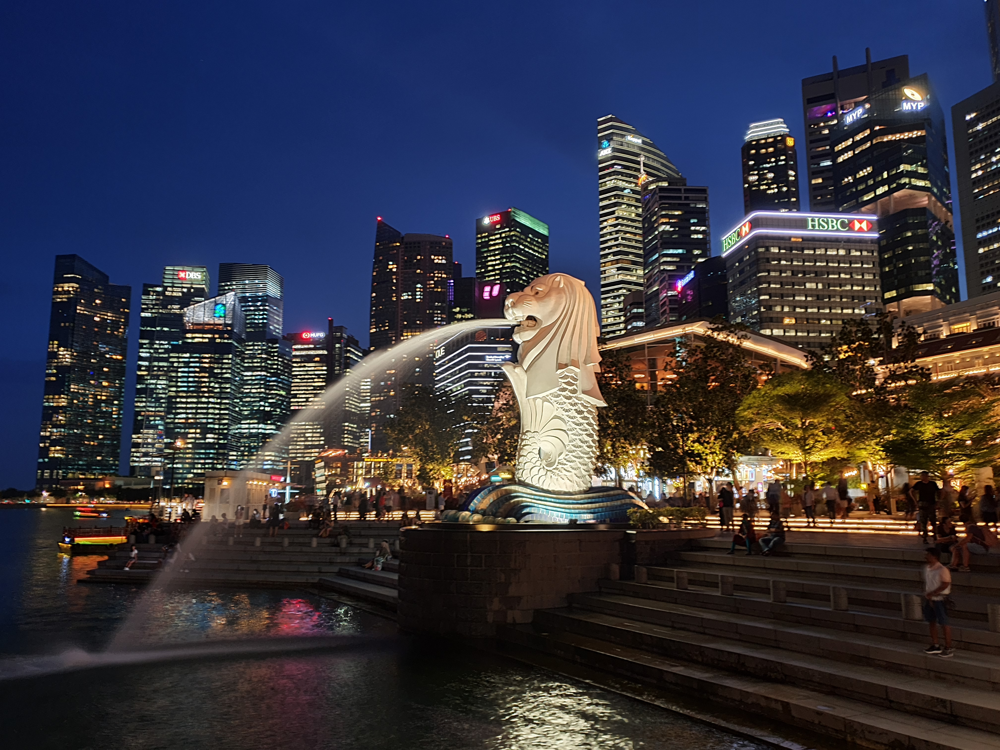
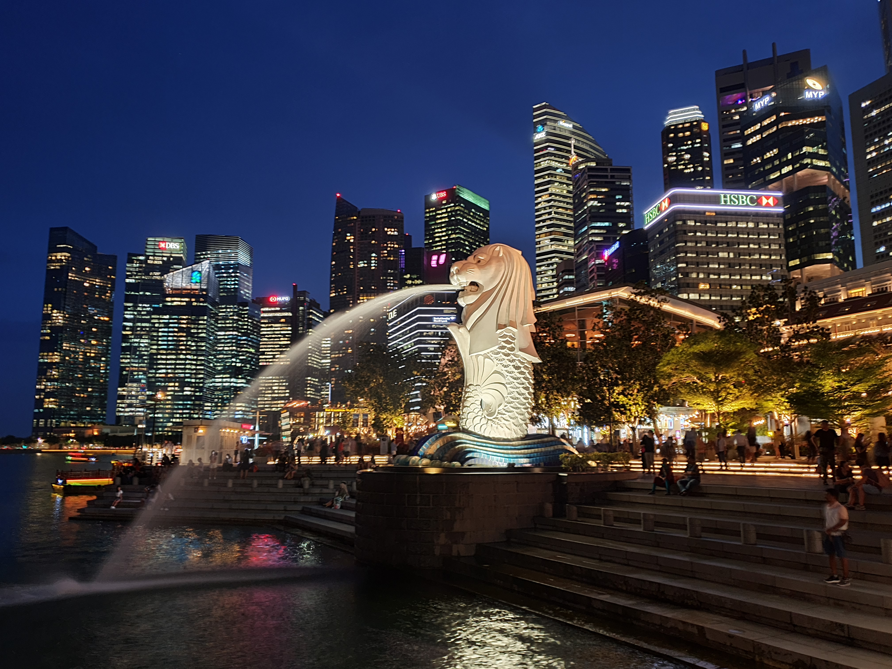
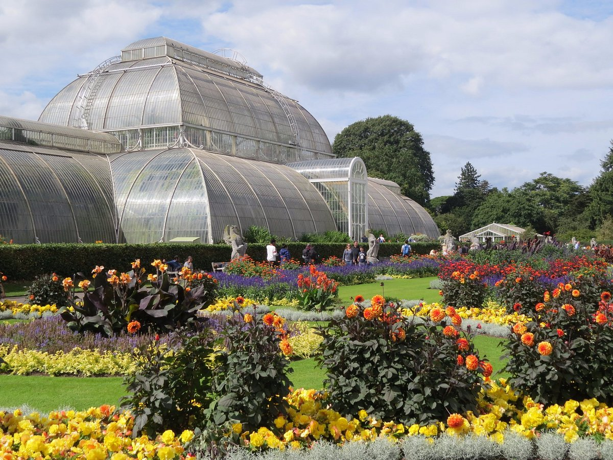
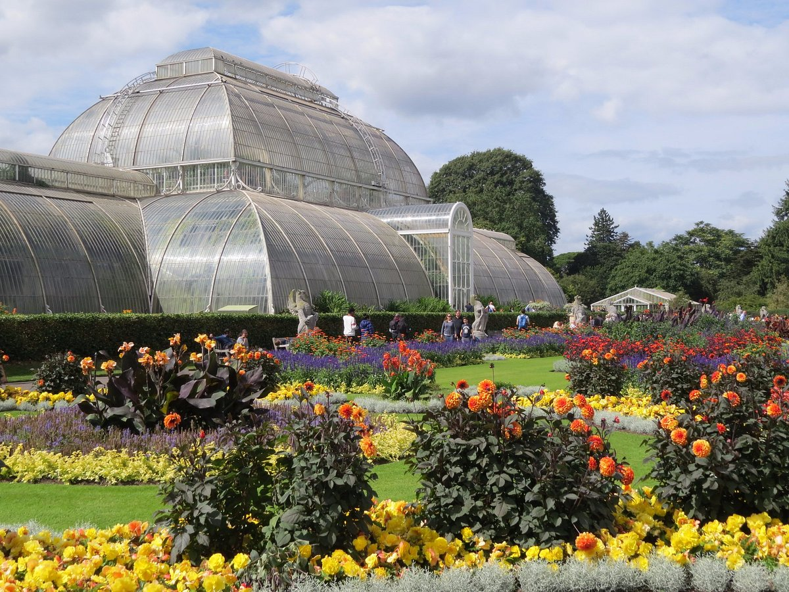

JAPAN
Japan is a country that is known for its rich culture, fascinating history, breathtaking landscapes, and unique cuisine. With a perfect blend of modernity and tradition, Japan is an ideal travel destination for those seeking a unique and unforgettable experience. Japan is known for everything from onsen hot springs and kabuki baths (dating to the 6th and 16th centuries, respectively) to all-night neon-lit dance parties, anime, and sushi boat restaurants, all of which are decidedly more modern.
Explore Destination of "Japan"
Mount Fuji
Mount Fuji is the tallest mountain in Japan and is known for its graceful conical form. It is the country's sacred symbol, and temples and shrines are located around and on the volcano.


Imperial Tokyo
The Imperial Palace is both literally and figuratively a hub of the Japanese capital. Located in central Tokyo, the palace grounds were once home to Edo Castle, the seat of government of the Tokugawa shogunate and the center around which the country is almost three Spun for centuries.


Hakuba Valley
Hakuba Valley, located in Nagano prefecture, is well known for its collection of 10 ski resorts and diversity of terrain that cater to riders of all abilities and styles.


PHILIPPINES
The country has many attractions, including beautiful beaches, impressive mountains, and a rich cultural heritage. Every year, millions of tourists flock to the islands of the Philippines to explore its breathtaking beauty and indulge in its offerings.
Explore Destination of "Philippines"
Intramuros
Intramuros, including Fort Santiago, was designated a National Historical Landmark in 1951. The fortifications of Intramuros, under the name Fortifications of Manila, were declared National Cultural Treasures by the National Museum of the Philippines, owing to its historic and cultural significance.


Boracay
Boracay, one of the top Islands in the Philippines, is popular for its beaches and blessed with a long stretch of powdery white sand, crystal clear and azure waters, and a stunning sunset. Boracay is the most iconic island in the Philipines and has won multiple awards in previous years.


Rizal Park
Rizal Park, also known as Luneta Park or simply Luneta, is a historical urban park located along Roxas Boulevard on Manila. It is adjacent to the old walled city of Intramuros and is of the largest urban parks in Asia. As the place where José Rizal was executed by the Spanish colonial authorities, it's also of great historical significance. The Rizal Park Visitors Centre provides a map detailing some 40 sights within the park.


SINGAPORE
Although Singapore is a year-round destination, the best time to visit Singapore is from December to June. The months of February to April fall within Singapore's dry season and is typically when the country has the least amount of rain, the lowest humidity, and the most sunshine.
Explore Destination of "Singapore"
Merlion Statue
The Merlion's fish-like body symbolises Singapore's origins as a fishing village, known as Temasek—a name which comes from same root as the word tasek ('lake' in Malay). The statue's head represents the city's original name of Singapura (lion city in Sanskrit).
 

Marina Bay Sands
Marina Bay Sands contributes to one percent of the GDP of Singapore, despite costing over 5.5 billion dollars to construct. The reason for spending so much money to stay at Marina Bay Sands is to swim in the highest infinity pool in the world, which is only accessible to hotel guests.
.jpg)


Sentosa Islands
Over the course of its remarkable history, Sentosa has transformed into a beloved island resort, best known for its tropical beaches, luxurious hotels and thrilling attractions. Whether you're looking for an adrenaline rush or a day of relaxing in the sun, Sentosa is bound to enchant and delight.


3 PLACES IN EUROPE
SWITZERLAND
Switzerland is a federal republic composed of 26 cantons, with federal authorities based in Bern. Switzerland is one of the world's most developed countries, with the highest nominal wealth per adult and the eighth-highest gross domestic product (GDP) per capita.
Explore Destination of "Switzerland"
Rhine falls
The Rhine Falls (Rheinfall) is breathtaking stupendous beauty and the largest plain waterfall in Europe. The falls are located on the High Rhine at Neuhausen am Rheinfall Village and just below Schaffhausen in the north of Switzerland.


Matterhorn
The pyramid shaped colossus of a mountain, which is very difficult to climb, is said to be the most-photographed mountain in the world. The Klein-Matterhorn ("Little Matterhorn"), which can be reached via a funicular, lies adjacent to the Matterhorn.


UNITED KINGDOM
The United Kingdom is a state made up of the historic countries of England, Wales and Scotland, as well as Northern Ireland. The U.K. is known all over the world for its sports and literature. Soccer, rugby, cricket, boxing, and golf were all invented in the United Kingdom.
Explore Destination of "United Kingdom"
Windsor Castle
Windsor Castle is the oldest and largest inhabited castle in the world and has been the family home of British kings and queens for almost 1,000 years. It is an official residence of Her Majesty The Queen and is still very much a working royal palace today, home to around 150 people.


Royal Botanic Gardens
Kew Gardens, Richmond upon Thames, London, Eng., designated a World Heritage site in 2003. Kew Gardens, formally Royal Botanic Gardens, Kew, botanical garden located at Kew, site of a former royal estate in the London borough of Richmond upon Thames. Kew Gardens is a botanic garden in southwest London that houses the "largest and most diverse botanical and mycological collections in the world".
 

NETHERLANDS
The Netherlands is a small country sandwiched between Belgium and Germany in Western Europe. The North Sea, located to the north and west of the Netherlands, is continually battering the land. The Netherlands is larger than the state of Maryland, but smaller than West Virginia.
Explore Destination of "Netherlands"
Van Gogh Museum
Van Gogh Museum, museum in Amsterdam that is devoted to the life and work of Vincent van Gogh. The Van Gogh Museum was opened in 1973 and consists of two buildings. Dutch architect Gerrit Rietveld, a member of the progressive art movement De Stijl, designed the main structure.


Anne Frank House
The Anne Frank House is a museum with a story behind it. The visitors experience this story through quotes, photos, film clips, and original items, such as the bookcase, the pictures in Anne's room, and the diaries. The atmosphere in the museum is authentic and subdued.


Amsterdam's Canals
The Jordaan is a neighborhood located in the city of Amsterdam, Netherlands. It is known for its picturesque streets, canals, and historic buildings. The neighborhood was originally a working-class area but has undergone gentrification over the years and is now considered a trendy and desirable place to live. The canals played a crucial role in Amsterdam’s economic success during the Golden Age, facilitating trade and commerce. They also served as a means of transportation for goods and people. Today, the canals are a major tourist attraction and are often associated with the city’s charming and romantic atmosphere.


3 PLACES IN AMERICA
UNITED STATES
The United States is the fourth largest country in the world in area (after Russia, Canada, and China). The national capital is Washington, which is coextensive with the District of Columbia, the federal capital region created in 1790. Capital: Washington, D.C.
Explore Destination of "United States"
Time Sqaure
Times Square is a major commercial intersection, tourist destination, entertainment hub, and neighborhood in Midtown Manhattan, New York City, United States.One of the main reasons why Times Square is so popular is the sheer amount of theaters along Broadway, in Lincoln Center, and the Theater District.


Yellowstone National Park
Yellowstone National Park sits on top of a dormant volcano and is home to more geysers and hot springs than any other place on earth. Wonders abound at this truly unique national park, from sites like the Yellowstone Grand Canyon to wildlife like America's largest buffalo herd, grizzly bears, and wolves.


CANADA
Canada is a country filled with famous landmarks, historical wonders, delicious food, incredible culture, and all the outdoor exploration you could want. From city adventures in Quebec and Vancouver to the well-known Rocky Mountains, Canada has so many amazing destinations that it'll be hard to choose.
Explore Destination of "Canada"
Niagara Falls
Niagara Falls is Canada's most famous natural attraction, bringing in millions of visitors each year. Located just over an hour's drive from Toronto, along the American border, these massive falls drop approximately 57 meters.


Stanley Park
One of North America's largest urban green spaces, Stanley Park is revered for its dramatic forest-and-mountain oceanfront views. But there's more to this 400-hectare woodland than looks.


MEXICO
Mexico is known for its rich culture, ancient ruins, dazzling beaches, and incredible cuisine. Tour Mayan temple ruins by day and indulge in fantastic food while listening to the rhythms of live music by night. Lounge on tropical beaches and explore the vibrant corals and marine life of the underwater world.
Explore Destination of "Mexico"
Mexico
The museum offers a look at how tradition, culture and life were formed in all regions of Mexico, and it also educates visitors on how Mexico's indigenous descendants live today. Past visitors said this is a must-see if you're interested in the ancient cultures of Mexico/Mesoamerica.


Palancar beach
Cozumel's west coast (the side facing Playa del Carmen) has calmer beaches and better snorkeling (the coral is protected from the waves, so it can thrive). The cruise ship ports are on this side, and folks coming in for the day on cruises tend to stay nearby, so the beaches closest to the port tend to be more crowded.